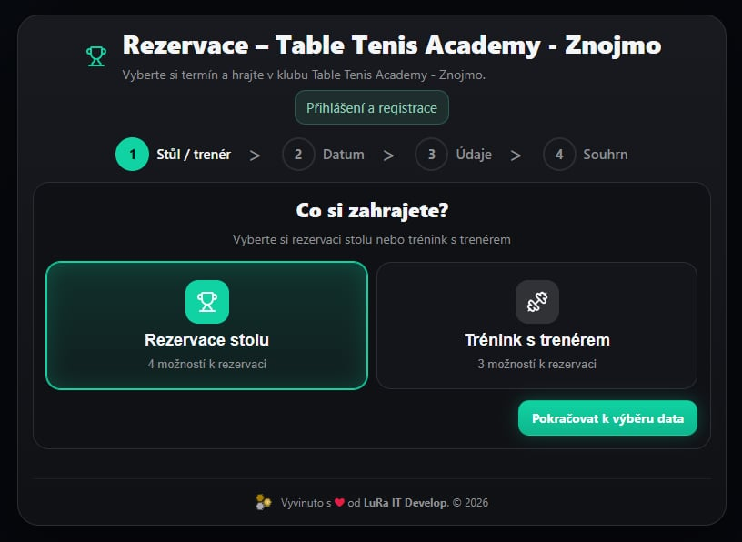
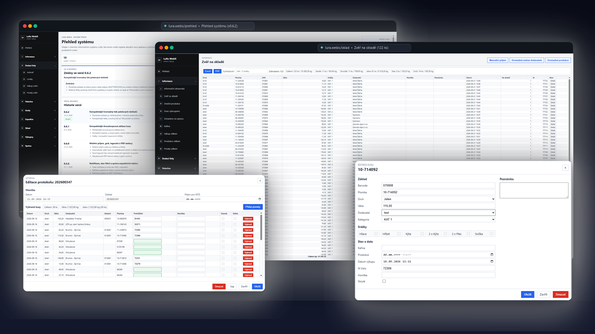

01
Weby a aplikace na míru
Prezentační web, jednoduchá aplikace, zákaznický portál i firemní systém. Začneme rozsahem, který vašemu podnikání opravdu sedí.
WEB · APP · ISLuRa IT Develop · od roku 2004
Od prvního webu pro živnostníka po aplikaci pro tým nebo větší systém. Začneme rozsahem, který dává smysl právě vám.
01 Přístup
Pomáháme živnostníkům, malým firmám i týmům, které chtějí pracovat chytřeji. Může jít o web, malou aplikaci, zákaznický portál nebo větší systém — důležité je začít řešením, které odpovídá vašim potřebám.
02 Služby
Co dodáváme
01
Prezentační web, jednoduchá aplikace, zákaznický portál i firemní systém. Začneme rozsahem, který vašemu podnikání opravdu sedí.
WEB · APP · IS02
Aplikace pro telefon, tablet i terén — s dotykem, offline režimem a napojením na data, když je potřebujete.
APP · MOBILE · OFFLINE03
Váhy, tiskárny, čtečky, terminály i průmyslová zařízení. Integraci řešíme tehdy, když vám ušetří čas nebo chyby.
SCALES · PRINT · SERIAL04
API, synchronizace a bezpečný pohyb dat mezi webem, mobilem, desktopem a službami třetích stran. Propojíme jen to, co má pro vás smysl.
API · AZURE · SIGNALR03 Realizace
Vybrané projekty

01 / SYSTEM
Webový informační systém pro firmy, kterým už Excel nestačí — procesy, projekty a dokumentace na jednom místě.
Navštívit projekt ↗
02 / WEB APP
Online rezervační systém pro Table Tennis Academy Znojmo. Umožňuje rezervaci stolů i tréninků s trenérem.
Navštívit projekt ↗
03 / MOBILE + HW
Příjem v terénu, Bluetooth tisk, offline režim a okamžitá synchronizace dat.

04 / HARDWARE
Robustní dotykové pracoviště propojené s váhou, tiskárnou štítků a centrální databází.

05 / ERP
Od nákupu a skladu po fakturaci, statistiky a napojení na partnerské služby. Jeden spolehlivý základ pro růst firmy.

06 / TOOL
Lokální Chrome rozšíření, které exportuje nástěnky a karty do čistého Markdownu.
Zobrazit na GitHubu ↗
07 / WINDOWS + HA
Windows aplikace pro tray monitoring zůstatku DeepSeek API: výstrahy, predikce spotřeby, dashboard a integrace do Home Assistanta.
Zobrazit na GitHubu ↗
08 / VS CODE
Rozšíření do VS Code, které přímo ve stavovém řádku hlídá zůstatek, spotřebu a dostupnost DeepSeek modelů.
Zobrazit na GitHubu ↗09 / PREPARING
Připravovaný .NET nástroj pro definici, validaci, náhled, export a tisk štítků i dokumentů z JSON šablon a JSON dat.
Připravuje se k veřejnému vydání

10 / TOUCH
Velké a přehledné ovládání pro provoz s propojením na databázi i váhu.

11 / BLAZOR IS
Moderní Blazor aplikace pro nákup, prodej, sklad a veterinární agendu. Zajišťuje dohledatelnost, detailní logování a tisk dokumentů v jednom provozním systému.
04 Spolupráce
Jak postupujeme
Dobrý web ani aplikace nezačíná seznamem technologií. Začíná tím, co potřebujete vyřešit.
Pojmenujeme cíle, uživatele, obsah, data i místa, kde dnes vznikají zdržení nebo chyby.
Rozhraní, funkce a technický základ, který dává smysl dnes a může růst zítra.
Vyvíjíme po částech, ověřujeme v praxi a zůstáváme partnerem i po nasazení.
První krok je jednoduchý
Ať potřebujete jednoduchý web, aplikaci na míru nebo větší systém, stačí pár vět. Společně najdeme rozumné řešení.
Lukáš Hanák
Senior .NET Developer & Architect+420 777 581 850hanak@lura-it.euLinkedInRadek Vala
Senior PHP Developer+420 728 015 407vala@lura-it.eu